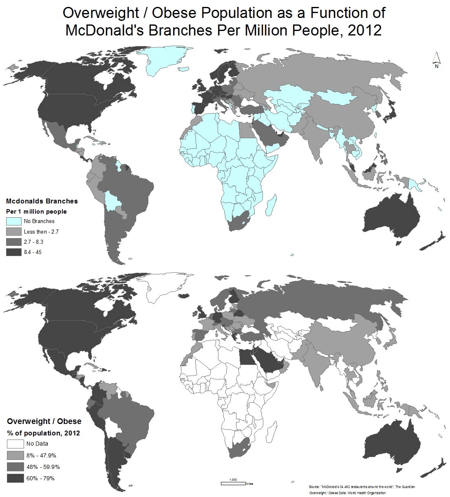

No more than five years ago, a strong correlation was believed to exist between poverty and the consumption of unhealthy, nutritionally lacking, so called “junk” food. In 2011, a publication in The Huffington Post stated that "many poor people in this country are consuming an excess of nutritionally-depleted, cheap calories from sodas, processed foods, and junk food. These folks scarcely eat whole, fresh foods at all, and for good reason: We have made calories cheap, but real food expensive". A 2012 article in The Daily Mail claimed that "Children from poor families are more likely to eat junk food".
Recently however, there has been a slow but steady change in thought. A recent Centers for Disease Control and Prevention (CDC) study found no correlation between fast-food intake and poverty status, as in fact, "children in the poorest group, from families earning less than 130% of the federal poverty level (currently about $26,000 for a family of three), get 11.5% of their calories from fast food, compared with about 13% for richer kids" (2015).
I would like to investigate some of the spatial aspects of this claim. Limited in my ability to conduct a full research of the subject, I would like to explore it through census data (income or poverty) and through geographical information regarding the distribution of McDonald's branches (as representative of fast food chains). Therefore, to sum up, my goal is to explore the association between level of income and the density of McDonald's branches in a given area, with an intention to focus on the neighborhood, city, country and international levels.
